Linking regulatory elements to genes
Nearest gene, correlation across samples, the activity-by-contact model, and CRISPRi screens as ground truth
Epigenetics
About this lecture
Differential accessibility ended with tens of thousands of peaks that differ between cell types, most of them distal, and a nearest gene written next to each. This lecture asks how to find the gene (or genes) an element actually regulates, and how to tell whether a method works.
- Why the nearest gene is often wrong, with numbers from CRISPR screens.
- Correlation of accessibility and expression across samples, and its null.
- Contact: the power law of distance, and Hi-C.
- The activity-by-contact (ABC) model: activity × contact, normalised per gene.
- Ground truth: CRISPRi enhancer screens, and precision–recall to compare methods.
- Running example: K562 (CRISPRi benchmark) and GM12878 (course data).
The question
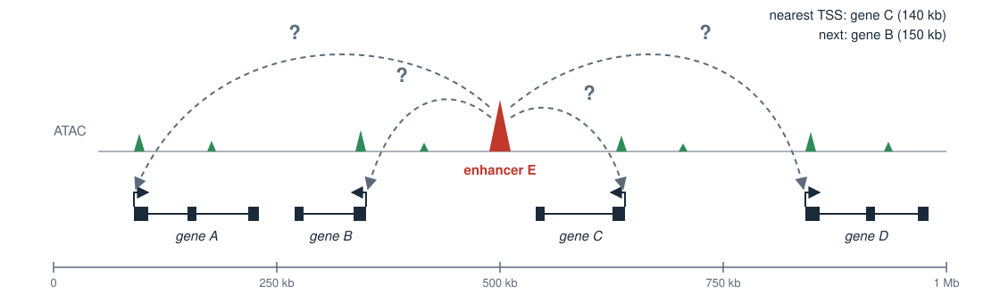
- An enhancer is a peak of ATAC-seq and H3K27ac. Nothing in the peak says which promoter it talks to.
- Candidate targets: every gene within about a megabase. The nearest TSS is the obvious guess, and the one most papers report.
- We need a target to interpret a differential peak, a motif in it, or a disease variant in it.
Enhancers skip genes
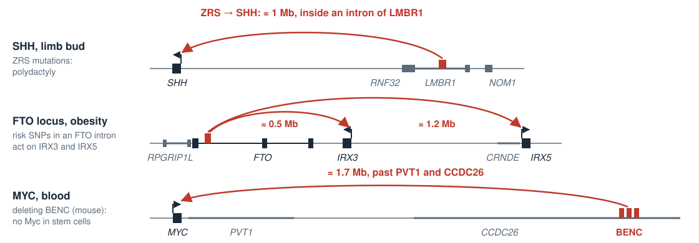
- ZRS: the limb enhancer of SHH sits about 1 Mb away, inside an intron of LMBR1; point mutations in it cause polydactyly.
- FTO: the strongest obesity GWAS signal lies in an FTO intron but acts on IRX3 and IRX5, 0.5 and 1.2 Mb away.
- BENC: a cluster of blood enhancers 1.7 Mb downstream of MYC; deleting it in mice removes Myc from haematopoietic stem cells.
How far away are real targets?
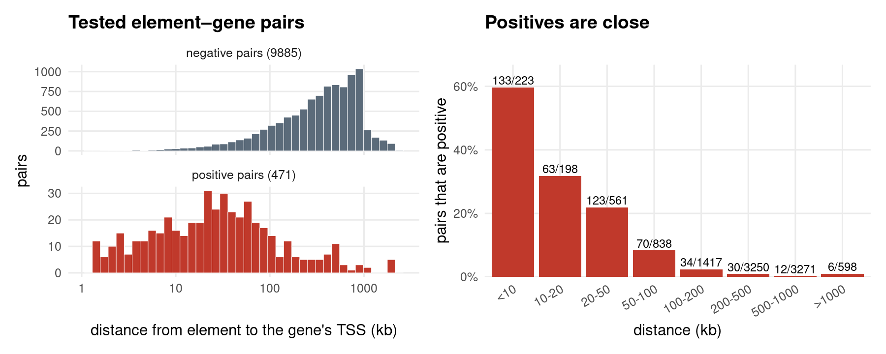
- 10 356 element–gene pairs tested by CRISPRi in K562; 471 are positive (silencing the element lowers the gene).
- Positives: median 26 kb from the TSS, 90% within 207 kb. Negatives: median 387 kb.
- Within 10 kb, 60% of tested pairs are positive; at 200–500 kb, 0.9%.
The nearest gene is right about half the time
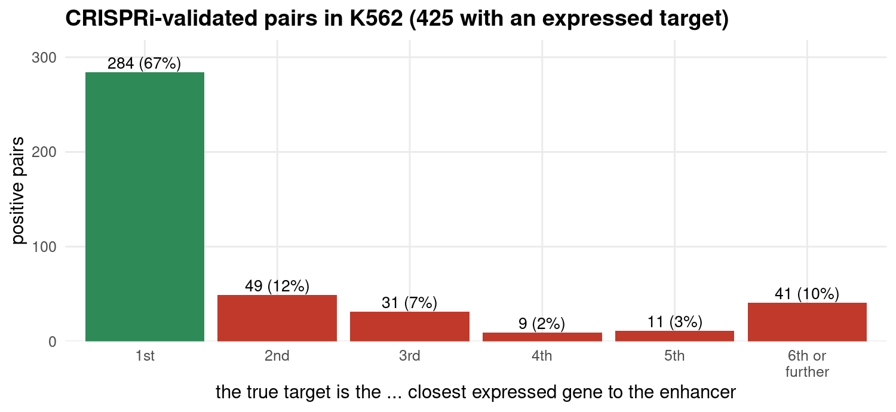
- Of 425 positive pairs whose target is expressed, the target is the closest expressed gene for 67%; for 33% it is the 2nd, 3rd … or a gene further away.
- As a predictor, “nearest gene” has precision 0.41, recall 0.54 (all protein-coding genes): it misses half of the links and half of its calls are wrong.
Four kinds of evidence
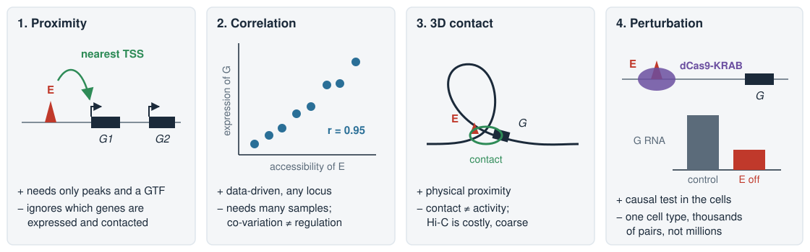
- They fail in different ways, so they are most useful combined.
- Only perturbation tests regulation directly; the others are predictions that perturbations are used to evaluate.
Correlation across samples
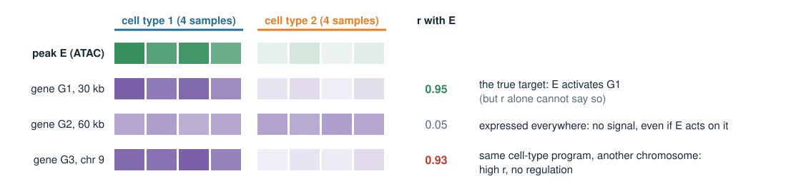
- Measure accessibility (ATAC) and expression (RNA-seq) in the same set of samples, and correlate each element with each gene nearby.
- With two groups of samples, everything specific to one group correlates with everything else specific to that group: co-variation is not regulation.
- Test only pairs within a window (e.g. ±500 kb), use many diverse samples, and compare with a null of random pairs.
Real data: 13 blood cell types
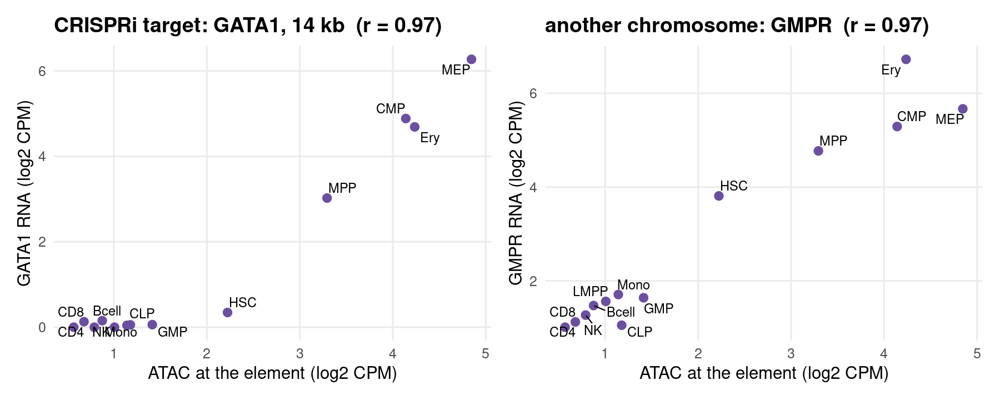
- Corces et al. 2016: ATAC and RNA for 13 sorted cell types. Left: a CRISPRi-validated enhancer of GATA1 (14 kb), r = 0.97 across the cell types.
- Right: the same element against GMPR, on another chromosome: also r = 0.97. 118 of 15 660 genes on other chromosomes reach r > 0.8.
Correlation needs a null
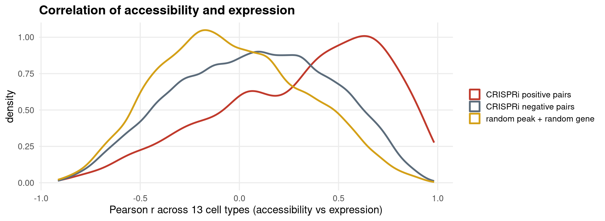
- Positive pairs have higher r (median 0.39) than negative pairs (0.09). But for random peak–gene pairs, 5% have r > 0.59 and 1% r > 0.77.
- As a score on the benchmark, correlation alone reaches AUPRC 0.14: three times random, far below distance (0.44).
- Single-cell multiome (RNA + ATAC in the same cells) gives thousands of samples; tools such as ArchR and Signac use the same test with a background of trans or GC-matched peaks.
Contact falls with distance
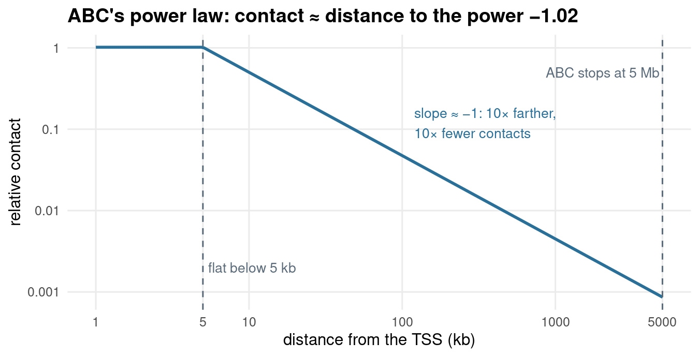
- In Hi-C, contact frequency falls roughly as a power law of genomic distance: C(d) \propto d^{-\gamma} with \gamma \approx 1 (3D genome organisation).
- ABC can use measured Hi-C or this curve; the published average is \gamma = 1.02, flat below 5 kb (Hi-C cannot resolve shorter distances), and elements beyond 5 Mb are ignored.
The activity-by-contact model
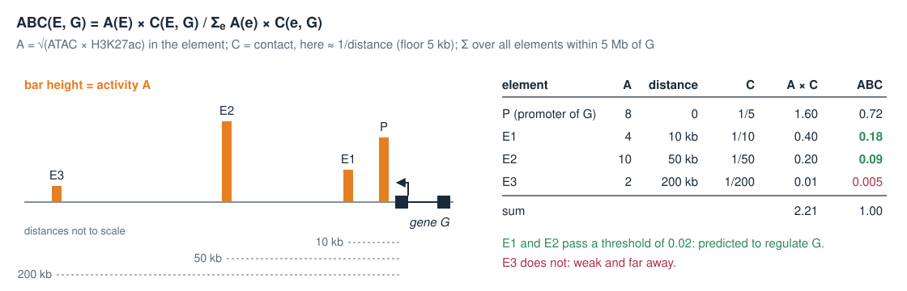
- An element’s effect on a gene ∝ its activity × its contact with the promoter; ABC is that product as a fraction of all such products near the gene (including the promoter itself).
- Predict a link when ABC ≥ about 0.02 (2% of the gene’s regulatory input).
Activity: accessibility and acetylation
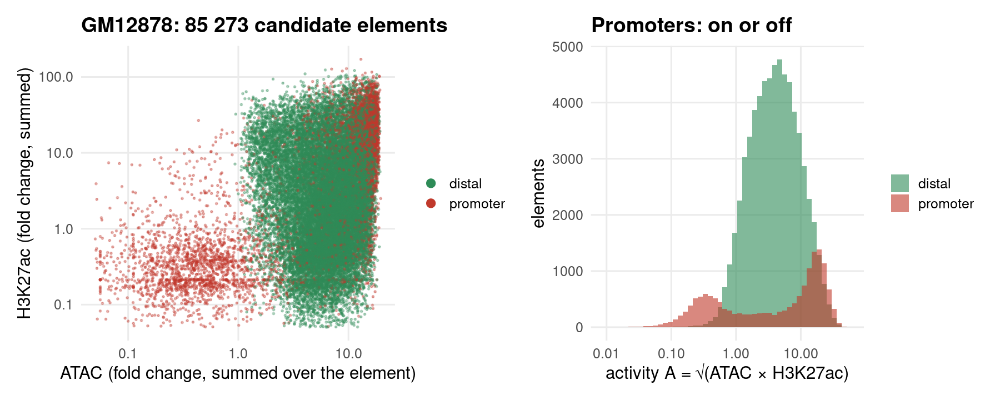
- Candidate elements: ATAC peaks (summit ± 250 bp, merged) plus all protein-coding promoters: 85 273 in GM12878.
- Activity A = \sqrt{\text{ATAC} \times \text{H3K27ac}}: an element needs both to score high. The geometric mean damps the noise of either assay.
- Promoters are on or off: 2 337 promoters have no signal at all (genes silent in B cells); active promoters are the most active elements.
Real data: ABC at the PPIF locus in GM12878
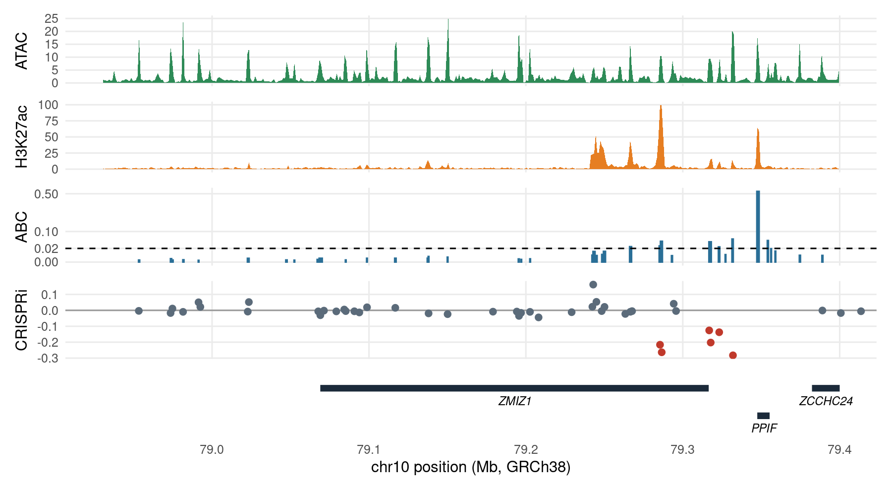
- ABC for PPIF from the course GM12878 ATAC and H3K27ac, against CRISPRi of 52 elements (Nasser et al. 2021).
- All 6 positives (red) have ABC ≥ 0.02; they lie 15–62 kb upstream, inside ZMIZ1. The nearest gene of four of them is ZMIZ1, not PPIF.
- Of the 46 negatives, 2 pass the threshold (80 kb, effects of 1%).
Ground truth: CRISPRi screens
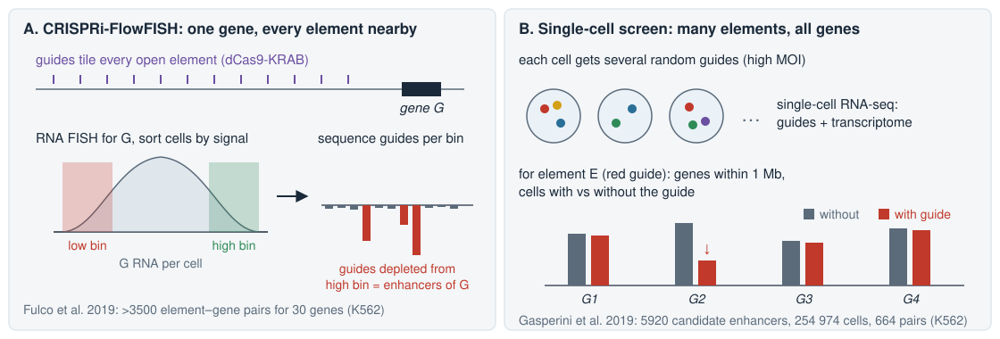
- dCas9-KRAB (CRISPR interference) deposits H3K9me3 at the guide’s target and silences an enhancer without cutting DNA.
- A: tile every element near one gene, sort cells by the gene’s RNA (FlowFISH), see which guides are depleted from the high bin.
- B: many random guides per cell, single-cell RNA-seq, compare every nearby gene between cells with and without each guide.
The benchmark
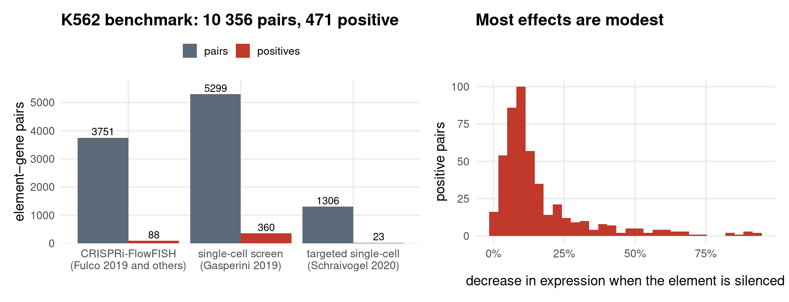
- Combined and re-processed by Gschwind et al. (ENCODE-rE2G): 10 356 pairs in K562, 471 positives = significant decrease (FDR 5%).
- Most effects are modest: median 10% decrease; 77% of positives below 20%.
- A negative is “no effect detected”: pairs without power for a 25% effect were removed, but small effects are missed.
Precision and recall
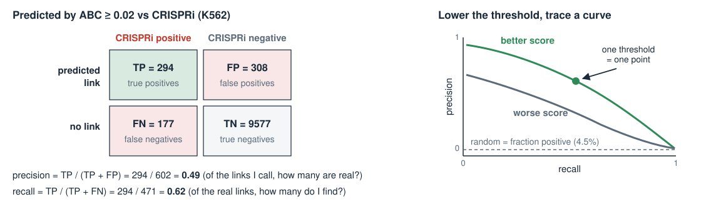
- Precision: of the links I call, how many are real? Recall: of the real links, how many do I find?
- Any score + a threshold gives one point; all thresholds give the PR curve. Its area (AUPRC) summarises it; random = the fraction of positives.
- With 4.5% positives, prefer PR to ROC: a ROC curve looks good even when most calls are wrong.
Real data: which score finds the links?

- Distance alone is a strong baseline (AUPRC 0.44). Activity alone is useless (0.10): strong elements are not more likely to regulate a given gene.
- ABC beats distance (0.48 with ATAC, 0.52 with DNase) and beats the nearest gene at both precision and recall.
- At high recall all methods converge: 19% of positives overlap no candidate element at all.
What ABC captures, and what it misses
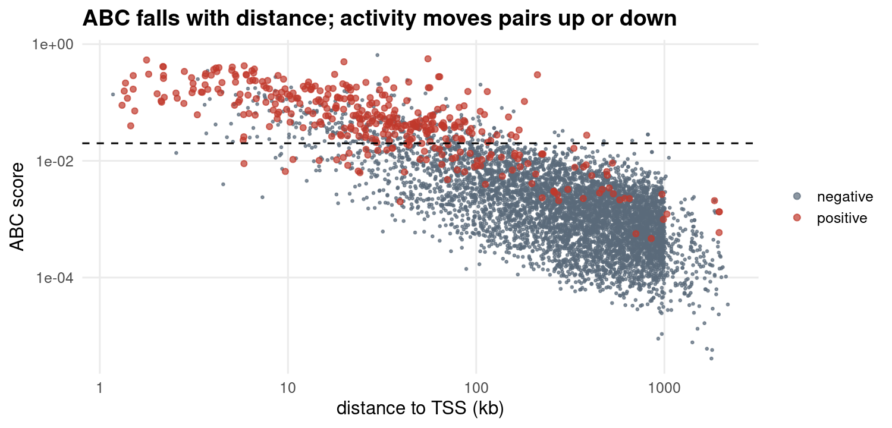
- ABC falls with distance; activity moves a pair up or down by up to 100-fold at a given distance.
- Missed positives (ABC < 0.02) are farther away (median 51 kb vs 22 kb for those found) and often weakly marked.
- Not modelled: silencers, insulation by CTCF boundaries, promoter–promoter competition, which TFs bind, and cell-type-specific 3D structure (when the power law is used).
Hi-C or a power law?
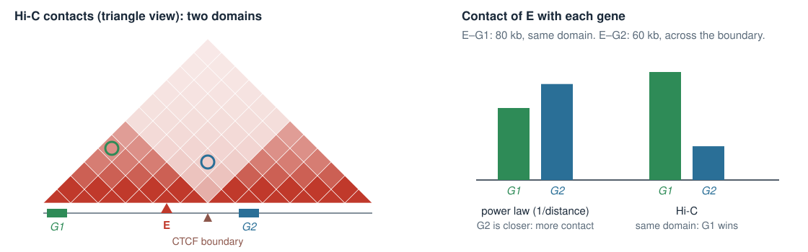
- A power law knows only distance. Measured contacts know domains: elements in the same TAD contact more, across a CTCF boundary less.
- ABC with Hi-C uses the contact of each element with the promoter (at 5 kb resolution, normalised and scaled to the power law).
- In the published comparisons, Hi-C improves ABC modestly; distance carries most of the information. Your own Hi-C of the 3D genome units can be plugged in.
Computing ABC in R
el[, activity := sqrt(dnase * h3k27ac)] # one row per candidate element
win <- GRanges(genes$chr, IRanges(pmax(genes$tss - 5e6, 1), genes$tss + 5e6))
hw <- findOverlaps(win, elg) # every element within 5 Mb of each gene
abc <- data.table(gene = genes$gene[queryHits(hw)], e = subjectHits(hw))
abc[, d := abs(el$mid[e] - genes$tss[queryHits(hw)])]
abc[, C := (pmax(d, 5000) + 1)^-1.024] # power-law contact, flat below 5 kb
abc[, ABC := el$activity[e] * C / sum(el$activity[e] * C), by = gene]
abc[ABC >= 0.02] # predicted enhancer–gene links- Ten lines on top of Genomic intervals: a window per gene, an overlap, a weighted share.
- The full pipeline (ABC on GitHub, Snakemake) adds peak calling, read counting, quantile normalisation and Hi-C.
Beyond ABC
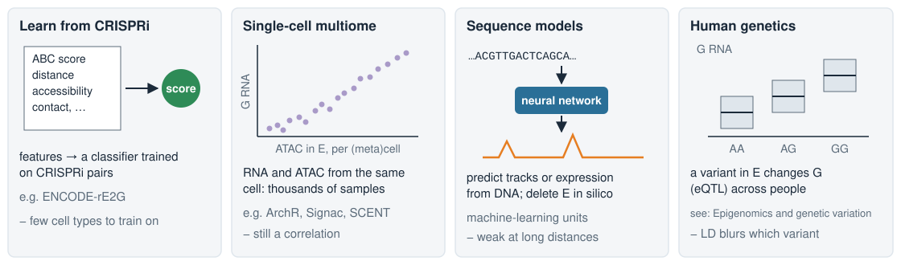
- Supervised models learn how to weigh ABC, distance and other features from CRISPRi data (ENCODE-rE2G, Gschwind et al.).
- Single-cell multiome brings correlation to thousands of cells; sequence models predict expression from DNA; genetics asks whether a variant in the element changes the gene across people.
In your own study
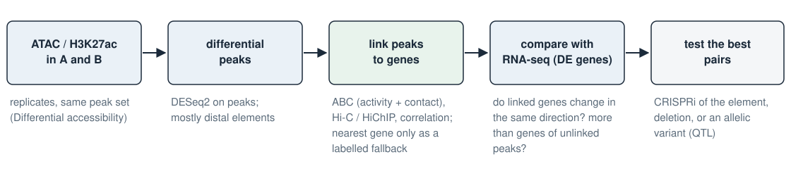
- Link differential peaks to genes with an ABC-type score (or contacts), keep the distance in the table, and report the method.
- Test concordance with RNA-seq: do genes linked to opening elements go up, more than expected? A promoter peak and its gene agree better than a distal peak and its nearest gene (Differential accessibility: Spearman 0.69 vs 0.42).
Judging claims
- “The enhancer regulates its nearest gene.” Correct about half the time; say “nearest gene” and give the distance.
- “Hi-C shows a loop between the enhancer and the promoter, so the enhancer regulates the gene.” Contact is necessary in most models but not sufficient; many loops are structural (CTCF–CTCF).
- “Accessibility of the element correlates with expression of the gene across 20 cell types (r = 0.9).” Compare with the correlation of random pairs; check genes on other chromosomes.
- “CRISPRi of the element had no effect, so it is not an enhancer of the gene.” Check the power: a 10% effect is easy to miss; the element may be redundant with others (shadow enhancers).
- “ABC predicts 40 000 enhancer–gene links.” A prediction with about 50% precision on benchmarks; useful for prioritisation, not proof.
Summary
| idea | key fact |
|---|---|
| the problem | enhancers act over tens of kb, sometimes Mb; the target is not written in the peak |
| nearest gene | right for about half of CRISPRi links (precision 0.41, recall 0.54 in K562) |
| correlation | needs many diverse samples and a null; cell-type programmes create false links |
| contact | Hi-C contact ∝ distance^−1 (power law); domains and boundaries modify it |
| ABC | activity (√(ATAC or DNase × H3K27ac)) × contact, as a share of all elements of the gene; link if ≥ ~0.02 |
| ground truth | CRISPRi screens (FlowFISH, single-cell); 471 of 10 356 K562 pairs positive, effects mostly 5–20% |
| evaluation | precision–recall, not ROC; compare with distance |
| this benchmark | AUPRC: activity 0.10, correlation 0.14, distance 0.44, ABC 0.48–0.52 |
Key papers (optional further reading)
Not required reading and not examined. For those who want the primary literature.
- Fulco et al. 2016, Science. Systematic mapping of functional enhancer–promoter connections with CRISPR interference. CRISPRi tiling of the MYC and GATA1 loci: the first systematic enhancer–gene map.
- Gasperini et al. 2019, Cell. A genome-wide framework for mapping gene regulation via cellular genetic screens. 5920 candidate enhancers silenced at random in single cells.
- Fulco et al. 2019, Nat Genet. Activity-by-contact model of enhancer–promoter regulation from thousands of CRISPR perturbations. CRISPRi-FlowFISH and the ABC model.
- Nasser et al. 2021, Nature. Genome-wide enhancer maps link risk variants to disease genes. ABC in 131 cell types and tissues, applied to GWAS; the PPIF enhancer.
- Gschwind et al. 2023, bioRxiv. An encyclopedia of enhancer-gene regulatory interactions in the human genome. ENCODE-rE2G and the CRISPR benchmark used here.
- Schoenfelder & Fraser 2019, Nat Rev Genet. Long-range enhancer–promoter contacts in gene expression control. Review of how enhancers reach their promoters.